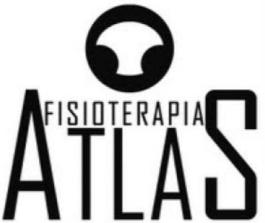

Fisioterapia
Consulta con el centro qué atención se ajusta a lo que necesitas.
Consultar
Llamar al centroCentro de fisioterapia · Córdoba
Fisioterapia, rehabilitación, osteopatía y acupuntura en Atlas.
01 · CABEZA Y CUELLO
Cuéntanos qué necesitas y pregunta por las opciones disponibles en Atlas.
Llamar al centroSigue bajando para avanzar por el cuerpo
CERCA DE TI · CÓRDOBA
Da el primer paso. En Atlas puedes consultar tus necesidades y descubrir cómo solicitar tu cita.
Hablar con Atlas ↗Imagen ilustrativa creada con IAATENCIÓN EN ATLAS
Estas áreas aparecen en la ficha pública de Atlas de CH Salud.
Desliza para descubrir los servicios →
Consulta con el centro qué atención se ajusta a lo que necesitas.
ConsultarContacta con Atlas para conocer disponibilidad y pedir cita.
ConsultarPregunta al equipo por este servicio y cómo solicitar una sesión.
ConsultarContacta con el centro para consultar los detalles de atención.
ConsultarATLAS · CÓRDOBA
Encuentra Atlas en la avenida Al‑Nasir y contacta directamente para pedir cita.
Ver Atlas en Google MapsCÓRDOBA · AV. AL‑NASIR
Elige cómo prefieres contactar con el centro.
DÓNDE ESTAMOS